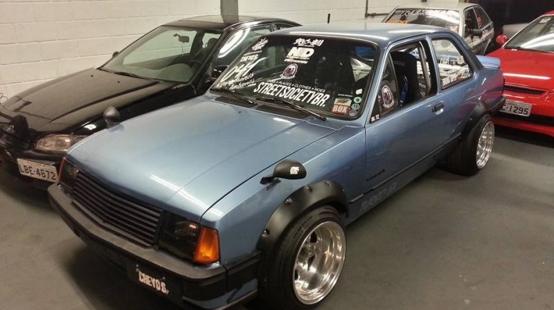

As etapas são divididas em duas partes, as classificatórias e as batalhas. Nas classificatórias os pilotos dão três voltas sozinhos na pista e são julgados com base nos quesitos de avaliação do drift. Estilo, linha e ângulo. A volta que eles tiverem o melhor desempenho, é a que conta para a qualificação. Depois disso os pilotos que ficaram entre os 16 primeiros formam as chaves de batalhas
Dentre os quesitos avaliados podemos dizer que não ganha o piloto que fica mais proximo ao outro, mas sim o que marca mais pontos em uma batalha. No quesito angulo o piloto de tras deve fazer um angulo maios ou igual ao do piloto da frente. No quesito linha, outro quesito que é avaliado pelo piloto que vem atras, sendo que ele precisa seguir a mesma linha do piloto da frente, o mesmo traçado. No quesito estilo podemos dizer que ele pode ser dividido em 3 partes lancamento, que é o momento em que o piloto comeca a fazer drift, o segundo é o comprometimanto que pode-se dizer que é o quesito 'esforco' , digamos assim, pois é o quesito em que o piloto pisa fundo, passa proximo do muro, e faz muita fumaça, e o ultimo quesito é suavidade, que é o piloto que no meio da volta faz poucas correções, faz uma volta limpa e perfeita. Uma coisa muito importante no campeonato tambem, e que não pode ser esquecido, é que o piloto jamais deve alinhar o carro durante o Drift, é visto pela direção de prova como um erro grave, o quel a possibilidade de lhe custar a prova é muito grande.
 Para se iniciar uma carreira de piloto de drift tem que se atentar a alguns pontos, mas dentre os esportes automobilisticos é o mais acessivel, pois não possui um alto custo como as outras modabilidades. Para se iniciar nessa carreira, primeiramente é necessario tirar a habilitação de piloto, a qual vc tem 2 dias de aula, um dia de teoricas e no outro pratica, em um circuito fechado e sob supervisao de um especialista, onde tem um ambiente seguro e totalmente protegido. Mas vale a pena lembrar que, para que voce possa competir no SDBa (Super Drift Brasil), que é a modalidade de Drift no Brasil, é necessário que a escola de pilotagem tenha reconhecimento pela CBA (Confederação Brasileira de Automobilismo). Passando essa essa etapa vc deve conseguir um carro, e equipa-lo da forma correta para competir, tanto na questão de desempenho tanto na questão segurança, que são mto importantes, seja no Drift ou em qualquer outro esporte automobilistico. É comum hoje em dia as pessoas pensarem que para iniciar no Drift é necessario uma BMW, ou um JDM, sendo que isso não é verdade, pois hoje encontramos diversos pilotos que iniciam nesse esporte com veiculos de menor custo, e manutenção mais barata, o chevette é um bom exemplo disso, mas vale a pena considerar que o custo depende muito de quão longe voce quer ir no Drift, o investimento pode variar de 10,000 mil ate 50,000 mil ou mais, ou seja, pra quem pretende iniciar e não sabe se quer seguir no esporte vale a pena começar com algo de menor custo, caso goste, o céu é o limite.